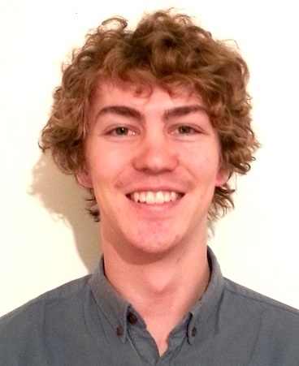

|  |
Dan WellsSpeech ScientistNuance Communications Email: dan dot wells at cantab dot net CV: pdf/txt |
|
Education
Completed coursework in automatic speech recognition, speech synthesis, natural language understanding, machine translation and other topics in NLP, applied machine learning, computer programming (Python), semantic web systems and univariate statistics. I wrote my master's thesis on unsupervised speech segmentation for zero-resource applications, including fully-unsupervised ASR. Experience
InterestsComputational linguistics, films with dinosaurs in them, music in languages I don't understand | ||
| Last updated: 22/10/2016 | ||